Tryby edytowania obietków
W Blenderze istnieje kilka trybów edytowania obiektów. Niektóre z nich działają na geometrię, inne na tekstury, a jeszcze inne na fizyczne animacje.
-
Edit mode (tryb edycji) 
Tryb edycji w Blenderze 3D umożliwia manipulację elementami siatki (mesh) obiektów, takimi jak wierzchołki, krawędzie i ściany. Po przejściu w tryb edycji, obiekty można modyfikować za pomocą różnych narzędzi, takich jak przesuwanie, skalowanie i obracanie. W skrócie, tryb edycji w Blenderze 3D to zestaw narzędzi i funkcji, które umożliwiają dokładną modyfikację geometrii obiektów w trójwymiarowej przestrzeni.
-
Object mode (tryb obiektów)
W trybie Object Mode w Blenderze 3D można wybierać i manipulować całymi obiektami, a nie ich poszczególnymi elementami, takimi jak wierzchołki czy krawędzie. Jest to tryb służący do zarządzania obiektami jako całością, pozwalając na operacje takie jak przemieszczanie, skalowanie, obracanie i dodawanie nowych obiektów do sceny. W tym trybie można także manipulować ustawieniami związanymi z obiektem, takimi jak jego lokalizacja, rotacja, skala oraz właściwości fizyczne.
-
Sculpt mode
Tryb Sculpt Mode w Blenderze 3D umożliwia artystyczne modelowanie obiektów poprzez wygładzanie, wyciąganie, wklepywanie i inne operacje, które przypominają rzeźbienie w materiale. W tym trybie można korzystać z różnych narzędzi i pędzli do manipulowania geometrią obiektów, co pozwala na tworzenie detali, modelowanie formy i nadawanie tekstur. Tryb Sculpt Mode jest używany głównie do tworzenia organicznych kształtów, takich jak postacie, stworzenia czy krajobrazy, ale może być również stosowany do modelowania innych rodzajów obiektów.
-
Texture Paint
Tryb Texture Paint w Blenderze 3D umożliwia bezpośrednie malowanie na teksturach obiektów. Pozwala to na dodawanie detali, kolorów i tekstur bezpośrednio na modelach 3D, co jest przydatne przy tworzeniu realistycznych tekstur oraz efektów wizualnych. W trybie Texture Paint można korzystać z różnych narzędzi malarskich, pędzli i opcji malowania, co daje artystom pełną kontrolę nad wyglądem i detalicznością tekstur.
-
Weight paint
Tryb Weight Paint w Blenderze 3D pozwala na "malowanie" wagi na wierzchołkach obiektów. Waga ta jest wykorzystywana w animacji, szczególnie w skomplikowanych modelach postaci, do kontrolowania deformacji podczas animacji. Dzięki trybowi Weight Paint można precyzyjnie kontrolować, które obszary obiektu będą miały większy wpływ na deformację podczas ruchu, co pozwala uzyskać bardziej naturalne i płynne animacje.
-
Vertex Paint 
Tryb Vertex Paint w Blenderze 3D pozwala na bezpośrednie malowanie kolorów na wierzchołkach obiektów. Jest to prosty sposób dodawania kolorów i efektów do modeli, zwłaszcza gdy tekstury nie są wymagane. W trybie Vertex Paint można malować bezpośrednio na wierzchołkach obiektu, nadając im różne kolory i mieszając je ze sobą. Jest to przydatne przy tworzeniu prostych tekstur, szybkich koncepcji artystycznych lub efektów wizualnych bez potrzeby tworzenia i aplikowania tekstur.